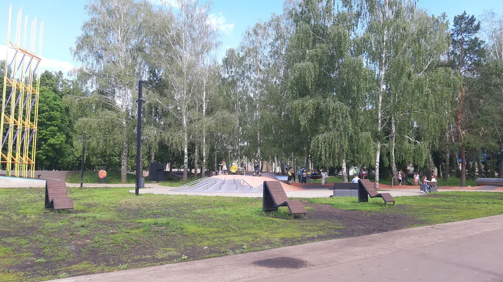

Популярные развлечения Набережных Челнов
Парк Победы

МУП «Парк культуры и отдыха» объединяет две прогулочно-развлекательные зоны города, «Комсомольский» и «Победы», расположенный в Автозаводском р-не. Последний занимает площадь в 7 га. Как понятно из названия, в нем уделено внимание воинской и мемориальной составляющей. Здесь будет интересно погулять мальчишкам, посмотреть образцы военной техники. В парке Победы работает более 50 аттракционов, которые условно делятся на три привычные категории: детские, семейные и экстремальные. К первой относятся «Веселая семейка», несколько надувных батутов, традиционные карусели «Солнышко», «Юнга», «Ветерок», а также джипы, водяные шары и т.д.
Батутный центр "Внебопарк"
Центр активного отдыха, основной специализацией которого являются батуты, позиционируется популярнейшим в своей нише в Набережных Челнах. ВНЕБОПАРК — это 47 батутов, на которых можно просто попрыгать в режиме свободного посещения, позаниматься в секции или провести мероприятия.
Дельфинарий
Единственный дельфинарий Татарстана открылся в 2006 году. Здание не строили специально, а переоборудовали уже имевшееся. Зрительный зал вмещает 350 зрителей. В водном шоу участвуют не только дельфины, но и морская львица. Представления проходят почти каждый день. Дополнительные программы включают плавание с дельфинами в бассейне или катание детей на миниатюрной лодке в их окружении.
Русский драматический театр «Мастеровые»

Открытие состоялось в 1975 году. Первое представление давали непрофессиональные актёры. Многие из них работали на заводе «КамАЗ». Именно благодаря им, театр получил своё название. В 1982 году труппе частично отдали под репетиции и выступления заводской Дом культуры. Со временем произошла смена вектора развития. На данный момент коллектив состоит из выпускников театральных вузов.
Татарский драматический театр

Один из самых молодых театров Татарстана открыл свои двери зрителям в 90-х годах прошлого века. Несколько лет труппа арендовала часть помещений Дома культуры «Энергетик». Получив статус государственного, театр перебрался в просторное здание, которое занимает и по сей день. Часть спектаклей подразумевает участие зрителей в постановках. На эти необычные мастер-классы нужно записываться заранее.
Парк Прибрежный
Популярное место для отдыха. Здесь есть разнообразные виды занятий для туристов и местных жителей. Любители шахмат могут сыграть фигурами внушительных размеров. Обустроена современная многокилометровая велодорожка. Зимой прокладывают лыжные трассы через весь парк. На склоне холма установлены большие буквы – название города на татарском языке. Парк принимает концерты и крупные мероприятия.
Органный зал

Органный зал представляет собой концертный зал, предназначенный для органной и камерной музыки. По своим акустическим характеристикам он является единственным заведением подобного рода в России. Комплекс не оборудован микрофонами или усилителями звуков. Здесь проводятся концерты, выступления артистов, музыкантов.
Парк Гренада
Экстрим-парк «Гренада» открылся совсем недавно, 23 июня 2012 г. Это событие стало настоящим праздником для всех любителей небанального досуга в Набережных Челнах. В спортивно-развлекательном комплексе под открытым небом работают площадки для паркура, многофункциональная зона для занятия уличными видами спорта: турники, веревочная полоса, скалодром, тренажеры, баскетбольная, волейбольная и футбольная площадки.